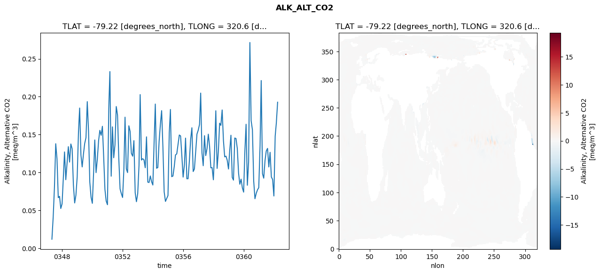
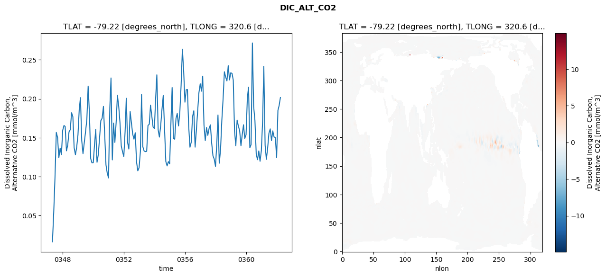
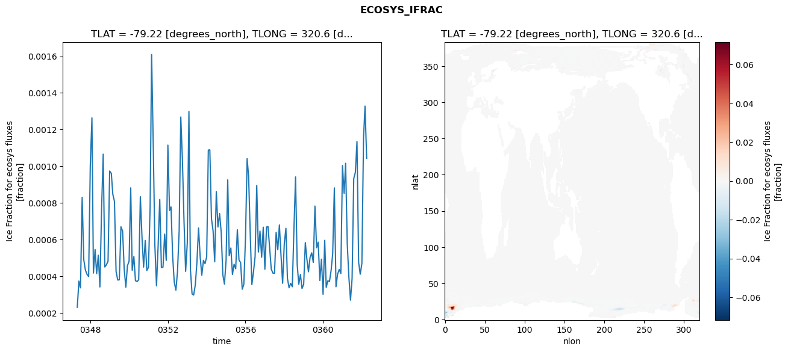
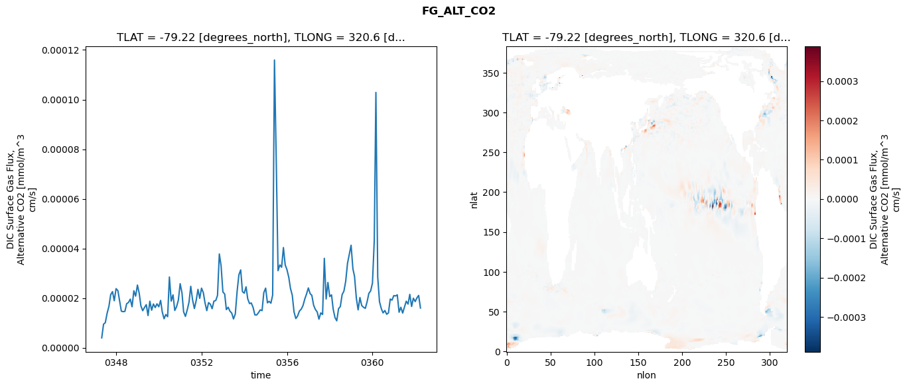

glb-dor_North_Atlantic_basin_009_1999-04-01_00037#
Simulation details#
Case: smyle.cdr-atlas-v0.glb-dor_North_Atlantic_basin_009_1999-04-01_00037.001
Basin: North_Atlantic_basin
Polygon: 9.0
Start date: 1999-04
Show code cell source Hide code cell source
import xarray as xr
import matplotlib.pyplot as plt
Show code cell source Hide code cell source
zarr_store = "/path/to/zarr/store"
# Parameters
zarr_store = "/global/cfs/projectdirs/m4746/Projects/Ocean-CDR-Atlas-v0/data/validation/smyle.cdr-atlas-v0.glb-dor_North_Atlantic_basin_009_1999-04-01_00037.001.validation.zarr"
Show code cell source Hide code cell source
%%time
ds_o = xr.open_zarr(zarr_store).compute()
ds_o
CPU times: user 680 ms, sys: 436 ms, total: 1.12 s
Wall time: 1.44 s
<xarray.Dataset> Size: 2MB
Dimensions: (nlat: 384, nlon: 320, time: 180)
Coordinates:
TLAT float64 8B -79.22
TLONG float64 8B 320.6
ULAT float64 8B -78.95
ULONG float64 8B 321.1
* time (time) object 1kB 0347-05-01 00:00:00 ... 0362-04-01 0...
z_t float32 4B 500.0
Dimensions without coordinates: nlat, nlon
Data variables:
ALK_ALT_CO2_diff (nlat, nlon) float32 492kB nan nan nan ... nan nan nan
ALK_ALT_CO2_rmse (time) float64 1kB 0.01178 0.04139 ... 0.1654 0.1927
DIC_ALT_CO2_diff (nlat, nlon) float32 492kB nan nan nan ... nan nan nan
DIC_ALT_CO2_rmse (time) float64 1kB 0.01629 0.05426 ... 0.1911 0.2015
ECOSYS_IFRAC_diff (nlat, nlon) float32 492kB nan nan nan ... nan nan nan
ECOSYS_IFRAC_rmse (time) float64 1kB 0.000231 0.0003739 ... 0.001044
FG_ALT_CO2_diff (nlat, nlon) float32 492kB nan nan nan ... nan nan nan
FG_ALT_CO2_rmse (time) float64 1kB 3.995e-06 9.5e-06 ... 1.602e-05xarray.Dataset
- nlat: 384
- nlon: 320
- time: 180
- TLAT()float64-79.22
- long_name :
- array of t-grid latitudes
- units :
- degrees_north
array(-79.22052261)
- TLONG()float64320.6
- long_name :
- array of t-grid longitudes
- units :
- degrees_east
array(320.56250892)
- ULAT()float64-78.95
- long_name :
- array of u-grid latitudes
- units :
- degrees_north
array(-78.95289509)
- ULONG()float64321.1
- long_name :
- array of u-grid longitudes
- units :
- degrees_east
array(321.12500894)
- time(time)object0347-05-01 00:00:00 ... 0362-04-...
- bounds :
- time_bound
- long_name :
- time
array([cftime.DatetimeNoLeap(347, 5, 1, 0, 0, 0, 0, has_year_zero=True), cftime.DatetimeNoLeap(347, 6, 1, 0, 0, 0, 0, has_year_zero=True), cftime.DatetimeNoLeap(347, 7, 1, 0, 0, 0, 0, has_year_zero=True), cftime.DatetimeNoLeap(347, 8, 1, 0, 0, 0, 0, has_year_zero=True), cftime.DatetimeNoLeap(347, 9, 1, 0, 0, 0, 0, has_year_zero=True), cftime.DatetimeNoLeap(347, 10, 1, 0, 0, 0, 0, has_year_zero=True), cftime.DatetimeNoLeap(347, 11, 1, 0, 0, 0, 0, has_year_zero=True), cftime.DatetimeNoLeap(347, 12, 1, 0, 0, 0, 0, has_year_zero=True), cftime.DatetimeNoLeap(348, 1, 1, 0, 0, 0, 0, has_year_zero=True), cftime.DatetimeNoLeap(348, 2, 1, 0, 0, 0, 0, has_year_zero=True), cftime.DatetimeNoLeap(348, 3, 1, 0, 0, 0, 0, has_year_zero=True), cftime.DatetimeNoLeap(348, 4, 1, 0, 0, 0, 0, has_year_zero=True), cftime.DatetimeNoLeap(348, 5, 1, 0, 0, 0, 0, has_year_zero=True), cftime.DatetimeNoLeap(348, 6, 1, 0, 0, 0, 0, has_year_zero=True), cftime.DatetimeNoLeap(348, 7, 1, 0, 0, 0, 0, has_year_zero=True), cftime.DatetimeNoLeap(348, 8, 1, 0, 0, 0, 0, has_year_zero=True), cftime.DatetimeNoLeap(348, 9, 1, 0, 0, 0, 0, has_year_zero=True), cftime.DatetimeNoLeap(348, 10, 1, 0, 0, 0, 0, has_year_zero=True), cftime.DatetimeNoLeap(348, 11, 1, 0, 0, 0, 0, has_year_zero=True), cftime.DatetimeNoLeap(348, 12, 1, 0, 0, 0, 0, has_year_zero=True), cftime.DatetimeNoLeap(349, 1, 1, 0, 0, 0, 0, has_year_zero=True), cftime.DatetimeNoLeap(349, 2, 1, 0, 0, 0, 0, has_year_zero=True), cftime.DatetimeNoLeap(349, 3, 1, 0, 0, 0, 0, has_year_zero=True), cftime.DatetimeNoLeap(349, 4, 1, 0, 0, 0, 0, has_year_zero=True), cftime.DatetimeNoLeap(349, 5, 1, 0, 0, 0, 0, has_year_zero=True), cftime.DatetimeNoLeap(349, 6, 1, 0, 0, 0, 0, has_year_zero=True), cftime.DatetimeNoLeap(349, 7, 1, 0, 0, 0, 0, has_year_zero=True), cftime.DatetimeNoLeap(349, 8, 1, 0, 0, 0, 0, has_year_zero=True), cftime.DatetimeNoLeap(349, 9, 1, 0, 0, 0, 0, has_year_zero=True), cftime.DatetimeNoLeap(349, 10, 1, 0, 0, 0, 0, has_year_zero=True), cftime.DatetimeNoLeap(349, 11, 1, 0, 0, 0, 0, has_year_zero=True), cftime.DatetimeNoLeap(349, 12, 1, 0, 0, 0, 0, has_year_zero=True), cftime.DatetimeNoLeap(350, 1, 1, 0, 0, 0, 0, has_year_zero=True), cftime.DatetimeNoLeap(350, 2, 1, 0, 0, 0, 0, has_year_zero=True), cftime.DatetimeNoLeap(350, 3, 1, 0, 0, 0, 0, has_year_zero=True), cftime.DatetimeNoLeap(350, 4, 1, 0, 0, 0, 0, has_year_zero=True), cftime.DatetimeNoLeap(350, 5, 1, 0, 0, 0, 0, has_year_zero=True), cftime.DatetimeNoLeap(350, 6, 1, 0, 0, 0, 0, has_year_zero=True), cftime.DatetimeNoLeap(350, 7, 1, 0, 0, 0, 0, has_year_zero=True), cftime.DatetimeNoLeap(350, 8, 1, 0, 0, 0, 0, has_year_zero=True), cftime.DatetimeNoLeap(350, 9, 1, 0, 0, 0, 0, has_year_zero=True), cftime.DatetimeNoLeap(350, 10, 1, 0, 0, 0, 0, has_year_zero=True), cftime.DatetimeNoLeap(350, 11, 1, 0, 0, 0, 0, has_year_zero=True), cftime.DatetimeNoLeap(350, 12, 1, 0, 0, 0, 0, has_year_zero=True), cftime.DatetimeNoLeap(351, 1, 1, 0, 0, 0, 0, has_year_zero=True), cftime.DatetimeNoLeap(351, 2, 1, 0, 0, 0, 0, has_year_zero=True), cftime.DatetimeNoLeap(351, 3, 1, 0, 0, 0, 0, has_year_zero=True), cftime.DatetimeNoLeap(351, 4, 1, 0, 0, 0, 0, has_year_zero=True), cftime.DatetimeNoLeap(351, 5, 1, 0, 0, 0, 0, has_year_zero=True), cftime.DatetimeNoLeap(351, 6, 1, 0, 0, 0, 0, has_year_zero=True), cftime.DatetimeNoLeap(351, 7, 1, 0, 0, 0, 0, has_year_zero=True), cftime.DatetimeNoLeap(351, 8, 1, 0, 0, 0, 0, has_year_zero=True), cftime.DatetimeNoLeap(351, 9, 1, 0, 0, 0, 0, has_year_zero=True), cftime.DatetimeNoLeap(351, 10, 1, 0, 0, 0, 0, has_year_zero=True), cftime.DatetimeNoLeap(351, 11, 1, 0, 0, 0, 0, has_year_zero=True), cftime.DatetimeNoLeap(351, 12, 1, 0, 0, 0, 0, has_year_zero=True), cftime.DatetimeNoLeap(352, 1, 1, 0, 0, 0, 0, has_year_zero=True), cftime.DatetimeNoLeap(352, 2, 1, 0, 0, 0, 0, has_year_zero=True), cftime.DatetimeNoLeap(352, 3, 1, 0, 0, 0, 0, has_year_zero=True), cftime.DatetimeNoLeap(352, 4, 1, 0, 0, 0, 0, has_year_zero=True), cftime.DatetimeNoLeap(352, 5, 1, 0, 0, 0, 0, has_year_zero=True), cftime.DatetimeNoLeap(352, 6, 1, 0, 0, 0, 0, has_year_zero=True), cftime.DatetimeNoLeap(352, 7, 1, 0, 0, 0, 0, has_year_zero=True), cftime.DatetimeNoLeap(352, 8, 1, 0, 0, 0, 0, has_year_zero=True), cftime.DatetimeNoLeap(352, 9, 1, 0, 0, 0, 0, has_year_zero=True), cftime.DatetimeNoLeap(352, 10, 1, 0, 0, 0, 0, has_year_zero=True), cftime.DatetimeNoLeap(352, 11, 1, 0, 0, 0, 0, has_year_zero=True), cftime.DatetimeNoLeap(352, 12, 1, 0, 0, 0, 0, has_year_zero=True), cftime.DatetimeNoLeap(353, 1, 1, 0, 0, 0, 0, has_year_zero=True), cftime.DatetimeNoLeap(353, 2, 1, 0, 0, 0, 0, has_year_zero=True), cftime.DatetimeNoLeap(353, 3, 1, 0, 0, 0, 0, has_year_zero=True), cftime.DatetimeNoLeap(353, 4, 1, 0, 0, 0, 0, has_year_zero=True), cftime.DatetimeNoLeap(353, 5, 1, 0, 0, 0, 0, has_year_zero=True), cftime.DatetimeNoLeap(353, 6, 1, 0, 0, 0, 0, has_year_zero=True), cftime.DatetimeNoLeap(353, 7, 1, 0, 0, 0, 0, has_year_zero=True), cftime.DatetimeNoLeap(353, 8, 1, 0, 0, 0, 0, has_year_zero=True), cftime.DatetimeNoLeap(353, 9, 1, 0, 0, 0, 0, has_year_zero=True), cftime.DatetimeNoLeap(353, 10, 1, 0, 0, 0, 0, has_year_zero=True), cftime.DatetimeNoLeap(353, 11, 1, 0, 0, 0, 0, has_year_zero=True), cftime.DatetimeNoLeap(353, 12, 1, 0, 0, 0, 0, has_year_zero=True), cftime.DatetimeNoLeap(354, 1, 1, 0, 0, 0, 0, has_year_zero=True), cftime.DatetimeNoLeap(354, 2, 1, 0, 0, 0, 0, has_year_zero=True), cftime.DatetimeNoLeap(354, 3, 1, 0, 0, 0, 0, has_year_zero=True), cftime.DatetimeNoLeap(354, 4, 1, 0, 0, 0, 0, has_year_zero=True), cftime.DatetimeNoLeap(354, 5, 1, 0, 0, 0, 0, has_year_zero=True), cftime.DatetimeNoLeap(354, 6, 1, 0, 0, 0, 0, has_year_zero=True), cftime.DatetimeNoLeap(354, 7, 1, 0, 0, 0, 0, has_year_zero=True), cftime.DatetimeNoLeap(354, 8, 1, 0, 0, 0, 0, has_year_zero=True), cftime.DatetimeNoLeap(354, 9, 1, 0, 0, 0, 0, has_year_zero=True), cftime.DatetimeNoLeap(354, 10, 1, 0, 0, 0, 0, has_year_zero=True), cftime.DatetimeNoLeap(354, 11, 1, 0, 0, 0, 0, has_year_zero=True), cftime.DatetimeNoLeap(354, 12, 1, 0, 0, 0, 0, has_year_zero=True), cftime.DatetimeNoLeap(355, 1, 1, 0, 0, 0, 0, has_year_zero=True), cftime.DatetimeNoLeap(355, 2, 1, 0, 0, 0, 0, has_year_zero=True), cftime.DatetimeNoLeap(355, 3, 1, 0, 0, 0, 0, has_year_zero=True), cftime.DatetimeNoLeap(355, 4, 1, 0, 0, 0, 0, has_year_zero=True), cftime.DatetimeNoLeap(355, 5, 1, 0, 0, 0, 0, has_year_zero=True), cftime.DatetimeNoLeap(355, 6, 1, 0, 0, 0, 0, has_year_zero=True), cftime.DatetimeNoLeap(355, 7, 1, 0, 0, 0, 0, has_year_zero=True), cftime.DatetimeNoLeap(355, 8, 1, 0, 0, 0, 0, has_year_zero=True), cftime.DatetimeNoLeap(355, 9, 1, 0, 0, 0, 0, has_year_zero=True), cftime.DatetimeNoLeap(355, 10, 1, 0, 0, 0, 0, has_year_zero=True), cftime.DatetimeNoLeap(355, 11, 1, 0, 0, 0, 0, has_year_zero=True), cftime.DatetimeNoLeap(355, 12, 1, 0, 0, 0, 0, has_year_zero=True), cftime.DatetimeNoLeap(356, 1, 1, 0, 0, 0, 0, has_year_zero=True), cftime.DatetimeNoLeap(356, 2, 1, 0, 0, 0, 0, has_year_zero=True), cftime.DatetimeNoLeap(356, 3, 1, 0, 0, 0, 0, has_year_zero=True), cftime.DatetimeNoLeap(356, 4, 1, 0, 0, 0, 0, has_year_zero=True), cftime.DatetimeNoLeap(356, 5, 1, 0, 0, 0, 0, has_year_zero=True), cftime.DatetimeNoLeap(356, 6, 1, 0, 0, 0, 0, has_year_zero=True), cftime.DatetimeNoLeap(356, 7, 1, 0, 0, 0, 0, has_year_zero=True), cftime.DatetimeNoLeap(356, 8, 1, 0, 0, 0, 0, has_year_zero=True), cftime.DatetimeNoLeap(356, 9, 1, 0, 0, 0, 0, has_year_zero=True), cftime.DatetimeNoLeap(356, 10, 1, 0, 0, 0, 0, has_year_zero=True), cftime.DatetimeNoLeap(356, 11, 1, 0, 0, 0, 0, has_year_zero=True), cftime.DatetimeNoLeap(356, 12, 1, 0, 0, 0, 0, has_year_zero=True), cftime.DatetimeNoLeap(357, 1, 1, 0, 0, 0, 0, has_year_zero=True), cftime.DatetimeNoLeap(357, 2, 1, 0, 0, 0, 0, has_year_zero=True), cftime.DatetimeNoLeap(357, 3, 1, 0, 0, 0, 0, has_year_zero=True), cftime.DatetimeNoLeap(357, 4, 1, 0, 0, 0, 0, has_year_zero=True), cftime.DatetimeNoLeap(357, 5, 1, 0, 0, 0, 0, has_year_zero=True), cftime.DatetimeNoLeap(357, 6, 1, 0, 0, 0, 0, has_year_zero=True), cftime.DatetimeNoLeap(357, 7, 1, 0, 0, 0, 0, has_year_zero=True), cftime.DatetimeNoLeap(357, 8, 1, 0, 0, 0, 0, has_year_zero=True), cftime.DatetimeNoLeap(357, 9, 1, 0, 0, 0, 0, has_year_zero=True), cftime.DatetimeNoLeap(357, 10, 1, 0, 0, 0, 0, has_year_zero=True), cftime.DatetimeNoLeap(357, 11, 1, 0, 0, 0, 0, has_year_zero=True), cftime.DatetimeNoLeap(357, 12, 1, 0, 0, 0, 0, has_year_zero=True), cftime.DatetimeNoLeap(358, 1, 1, 0, 0, 0, 0, has_year_zero=True), cftime.DatetimeNoLeap(358, 2, 1, 0, 0, 0, 0, has_year_zero=True), cftime.DatetimeNoLeap(358, 3, 1, 0, 0, 0, 0, has_year_zero=True), cftime.DatetimeNoLeap(358, 4, 1, 0, 0, 0, 0, has_year_zero=True), cftime.DatetimeNoLeap(358, 5, 1, 0, 0, 0, 0, has_year_zero=True), cftime.DatetimeNoLeap(358, 6, 1, 0, 0, 0, 0, has_year_zero=True), cftime.DatetimeNoLeap(358, 7, 1, 0, 0, 0, 0, has_year_zero=True), cftime.DatetimeNoLeap(358, 8, 1, 0, 0, 0, 0, has_year_zero=True), cftime.DatetimeNoLeap(358, 9, 1, 0, 0, 0, 0, has_year_zero=True), cftime.DatetimeNoLeap(358, 10, 1, 0, 0, 0, 0, has_year_zero=True), cftime.DatetimeNoLeap(358, 11, 1, 0, 0, 0, 0, has_year_zero=True), cftime.DatetimeNoLeap(358, 12, 1, 0, 0, 0, 0, has_year_zero=True), cftime.DatetimeNoLeap(359, 1, 1, 0, 0, 0, 0, has_year_zero=True), cftime.DatetimeNoLeap(359, 2, 1, 0, 0, 0, 0, has_year_zero=True), cftime.DatetimeNoLeap(359, 3, 1, 0, 0, 0, 0, has_year_zero=True), cftime.DatetimeNoLeap(359, 4, 1, 0, 0, 0, 0, has_year_zero=True), cftime.DatetimeNoLeap(359, 5, 1, 0, 0, 0, 0, has_year_zero=True), cftime.DatetimeNoLeap(359, 6, 1, 0, 0, 0, 0, has_year_zero=True), cftime.DatetimeNoLeap(359, 7, 1, 0, 0, 0, 0, has_year_zero=True), cftime.DatetimeNoLeap(359, 8, 1, 0, 0, 0, 0, has_year_zero=True), cftime.DatetimeNoLeap(359, 9, 1, 0, 0, 0, 0, has_year_zero=True), cftime.DatetimeNoLeap(359, 10, 1, 0, 0, 0, 0, has_year_zero=True), cftime.DatetimeNoLeap(359, 11, 1, 0, 0, 0, 0, has_year_zero=True), cftime.DatetimeNoLeap(359, 12, 1, 0, 0, 0, 0, has_year_zero=True), cftime.DatetimeNoLeap(360, 1, 1, 0, 0, 0, 0, has_year_zero=True), cftime.DatetimeNoLeap(360, 2, 1, 0, 0, 0, 0, has_year_zero=True), cftime.DatetimeNoLeap(360, 3, 1, 0, 0, 0, 0, has_year_zero=True), cftime.DatetimeNoLeap(360, 4, 1, 0, 0, 0, 0, has_year_zero=True), cftime.DatetimeNoLeap(360, 5, 1, 0, 0, 0, 0, has_year_zero=True), cftime.DatetimeNoLeap(360, 6, 1, 0, 0, 0, 0, has_year_zero=True), cftime.DatetimeNoLeap(360, 7, 1, 0, 0, 0, 0, has_year_zero=True), cftime.DatetimeNoLeap(360, 8, 1, 0, 0, 0, 0, has_year_zero=True), cftime.DatetimeNoLeap(360, 9, 1, 0, 0, 0, 0, has_year_zero=True), cftime.DatetimeNoLeap(360, 10, 1, 0, 0, 0, 0, has_year_zero=True), cftime.DatetimeNoLeap(360, 11, 1, 0, 0, 0, 0, has_year_zero=True), cftime.DatetimeNoLeap(360, 12, 1, 0, 0, 0, 0, has_year_zero=True), cftime.DatetimeNoLeap(361, 1, 1, 0, 0, 0, 0, has_year_zero=True), cftime.DatetimeNoLeap(361, 2, 1, 0, 0, 0, 0, has_year_zero=True), cftime.DatetimeNoLeap(361, 3, 1, 0, 0, 0, 0, has_year_zero=True), cftime.DatetimeNoLeap(361, 4, 1, 0, 0, 0, 0, has_year_zero=True), cftime.DatetimeNoLeap(361, 5, 1, 0, 0, 0, 0, has_year_zero=True), cftime.DatetimeNoLeap(361, 6, 1, 0, 0, 0, 0, has_year_zero=True), cftime.DatetimeNoLeap(361, 7, 1, 0, 0, 0, 0, has_year_zero=True), cftime.DatetimeNoLeap(361, 8, 1, 0, 0, 0, 0, has_year_zero=True), cftime.DatetimeNoLeap(361, 9, 1, 0, 0, 0, 0, has_year_zero=True), cftime.DatetimeNoLeap(361, 10, 1, 0, 0, 0, 0, has_year_zero=True), cftime.DatetimeNoLeap(361, 11, 1, 0, 0, 0, 0, has_year_zero=True), cftime.DatetimeNoLeap(361, 12, 1, 0, 0, 0, 0, has_year_zero=True), cftime.DatetimeNoLeap(362, 1, 1, 0, 0, 0, 0, has_year_zero=True), cftime.DatetimeNoLeap(362, 2, 1, 0, 0, 0, 0, has_year_zero=True), cftime.DatetimeNoLeap(362, 3, 1, 0, 0, 0, 0, has_year_zero=True), cftime.DatetimeNoLeap(362, 4, 1, 0, 0, 0, 0, has_year_zero=True)], dtype=object) - z_t()float32500.0
- long_name :
- depth from surface to midpoint of layer
- positive :
- down
- units :
- centimeters
- valid_max :
- 537500.0
- valid_min :
- 500.0
array(500., dtype=float32)
- ALK_ALT_CO2_diff(nlat, nlon)float32nan nan nan nan ... nan nan nan nan
- cell_methods :
- time: mean
- grid_loc :
- 3111
- long_name :
- Alkalinity, Alternative CO2
- units :
- meq/m^3
array([[ nan, nan, nan, ..., nan, nan, nan], [ nan, nan, nan, ..., nan, nan, nan], [0.02905273, 0.0456543 , 0.0871582 , ..., nan, nan, nan], ..., [ nan, nan, nan, ..., nan, nan, nan], [ nan, nan, nan, ..., nan, nan, nan], [ nan, nan, nan, ..., nan, nan, nan]], dtype=float32) - ALK_ALT_CO2_rmse(time)float640.01178 0.04139 ... 0.1654 0.1927
- cell_methods :
- time: mean
- grid_loc :
- 3111
- long_name :
- Alkalinity, Alternative CO2
- units :
- meq/m^3
array([0.01178 , 0.04139044, 0.08033788, 0.13784041, 0.11760789, 0.06662029, 0.06839018, 0.05231929, 0.05847534, 0.09352429, 0.12702123, 0.09035918, 0.11211293, 0.1339896 , 0.11361617, 0.13751851, 0.13113431, 0.08379713, 0.0596575 , 0.06984873, 0.09434453, 0.15388283, 0.18499066, 0.12299835, 0.10723115, 0.12424487, 0.13823414, 0.14597482, 0.19344078, 0.15483852, 0.08721688, 0.06736719, 0.05916703, 0.10004498, 0.14284373, 0.09968465, 0.11722194, 0.14178657, 0.15554188, 0.14897184, 0.16087878, 0.12147509, 0.07748891, 0.06219074, 0.05731128, 0.18399183, 0.23313875, 0.09498613, 0.16013007, 0.11932862, 0.13630836, 0.18700178, 0.17580765, 0.11919301, 0.07823354, 0.07211148, 0.06686721, 0.10406111, 0.17291308, 0.10473748, 0.09974875, 0.16154677, 0.15429339, 0.12527534, 0.12138111, 0.14195875, 0.07305923, 0.06132291, 0.07208996, 0.1092544 , 0.20272413, 0.11631223, 0.11812546, 0.11654386, 0.10615324, 0.14693268, 0.08718407, 0.08663934, 0.09530393, 0.08779359, 0.08333689, 0.14135311, 0.19023279, 0.1054855 , 0.10640989, 0.14085956, 0.16298774, 0.18153976, 0.13301176, 0.07434628, 0.06168746, 0.06551639, 0.06945861, 0.15242896, 0.18310731, 0.09435199, 0.0952223 , 0.10776655, 0.1230231 , 0.12450822, 0.13691901, 0.14935872, 0.14816181, 0.12240671, 0.09380795, 0.11014217, 0.14529712, 0.09158539, 0.09165901, 0.11495063, 0.14322622, 0.15892122, 0.10111735, 0.10453099, 0.1283011 , 0.15058037, 0.1557618 , 0.16345096, 0.20473093, 0.12580285, 0.10881095, 0.14849558, 0.12220219, 0.13153737, 0.15048082, 0.1347661 , 0.10604167, 0.10638621, 0.09024671, 0.1302159 , 0.18139208, 0.10522636, 0.127244 , 0.16502407, 0.162059 , 0.18245672, 0.14208675, 0.12052045, 0.12147424, 0.11608719, 0.10448613, 0.1301667 , 0.14907235, 0.09342133, 0.08976639, 0.14540043, 0.14471326, 0.13166964, 0.09901115, 0.08436072, 0.09110218, 0.07968378, 0.07395453, 0.12937077, 0.16355804, 0.08300533, 0.11370197, 0.27152241, 0.16828954, 0.15630071, 0.08874255, 0.06524213, 0.07232644, 0.07694293, 0.07984972, 0.13503524, 0.2212886 , 0.09825579, 0.09235323, 0.11566521, 0.12827179, 0.13170916, 0.10720225, 0.12654051, 0.09395997, 0.0906613 , 0.0688402 , 0.14774121, 0.16541711, 0.1926925 ]) - DIC_ALT_CO2_diff(nlat, nlon)float32nan nan nan nan ... nan nan nan nan
- cell_methods :
- time: mean
- grid_loc :
- 3111
- long_name :
- Dissolved Inorganic Carbon, Alternative CO2
- units :
- mmol/m^3
array([[ nan, nan, nan, ..., nan, nan, nan], [ nan, nan, nan, ..., nan, nan, nan], [-0.07470703, -0.04418945, 0.01098633, ..., nan, nan, nan], ..., [ nan, nan, nan, ..., nan, nan, nan], [ nan, nan, nan, ..., nan, nan, nan], [ nan, nan, nan, ..., nan, nan, nan]], dtype=float32) - DIC_ALT_CO2_rmse(time)float640.01629 0.05426 ... 0.1911 0.2015
- cell_methods :
- time: mean
- grid_loc :
- 3111
- long_name :
- Dissolved Inorganic Carbon, Alternative CO2
- units :
- mmol/m^3
array([0.01628585, 0.05426216, 0.09888313, 0.15676985, 0.15010568, 0.12429096, 0.13651807, 0.12829592, 0.15941881, 0.16561913, 0.1644032 , 0.13310267, 0.14050881, 0.15746237, 0.16027547, 0.18203639, 0.17688262, 0.13729573, 0.12809401, 0.13757581, 0.1536641 , 0.18703204, 0.20136934, 0.14620129, 0.12951432, 0.14380745, 0.15770687, 0.17330101, 0.21621295, 0.18171889, 0.12313666, 0.11763878, 0.11792045, 0.14155562, 0.160465 , 0.11840004, 0.12815746, 0.1498965 , 0.17183036, 0.17499057, 0.1901326 , 0.15419012, 0.11501392, 0.10446835, 0.09829918, 0.18887457, 0.22665021, 0.12148371, 0.16875105, 0.1439091 , 0.16890499, 0.20447571, 0.19030163, 0.16953014, 0.13932474, 0.13212466, 0.12563656, 0.15830579, 0.2005824 , 0.14390574, 0.1354474 , 0.18351921, 0.16932454, 0.15461673, 0.14806406, 0.15634209, 0.11873723, 0.10745848, 0.11153566, 0.13232555, 0.20536515, 0.13828754, 0.13285201, 0.13209702, 0.1324548 , 0.16568001, 0.16725869, 0.19171978, 0.17735152, 0.16372538, 0.16185511, 0.20137568, 0.23065389, 0.16012942, 0.15077743, 0.16557361, 0.18613993, 0.20419342, 0.16023844, 0.11946205, 0.11374225, 0.11923638, 0.11636531, 0.1705016 , 0.21437899, 0.14908751, 0.14804319, 0.17466213, 0.18112715, 0.16509169, 0.18288865, 0.21690328, 0.26361486, 0.23613966, 0.19560251, 0.21150418, 0.21186476, 0.16425016, 0.13774966, 0.14426927, 0.17689621, 0.18450159, 0.13788934, 0.15925944, 0.18445602, 0.207765 , 0.21919054, 0.20970013, 0.22899428, 0.16622126, 0.14631466, 0.16300566, 0.15296861, 0.16193671, 0.16646125, 0.14340361, 0.12679116, 0.12250308, 0.11315235, 0.14221955, 0.17914663, 0.11723329, 0.13435292, 0.17218251, 0.19951461, 0.23460268, 0.22777824, 0.2228313 , 0.24243363, 0.22414129, 0.23338174, 0.23234573, 0.22391423, 0.15848313, 0.1395558 , 0.1725574 , 0.1649792 , 0.15889732, 0.13960836, 0.15383002, 0.16652783, 0.14900791, 0.15371176, 0.20132845, 0.21475576, 0.13703666, 0.14115604, 0.27160285, 0.19027583, 0.17194524, 0.12889479, 0.1217285 , 0.13296173, 0.11971152, 0.13324319, 0.17203015, 0.24156086, 0.14034365, 0.12221435, 0.13700268, 0.1557069 , 0.16128117, 0.14628517, 0.15870275, 0.15080187, 0.15032001, 0.12439679, 0.184999 , 0.19107169, 0.20147962]) - ECOSYS_IFRAC_diff(nlat, nlon)float32nan nan nan nan ... nan nan nan nan
- cell_methods :
- time: mean
- grid_loc :
- 2110
- long_name :
- Ice Fraction for ecosys fluxes
- units :
- fraction
array([[ nan, nan, nan, ..., nan, nan, nan], [ nan, nan, nan, ..., nan, nan, nan], [-0.00091469, -0.00162125, -0.00192338, ..., nan, nan, nan], ..., [ nan, nan, nan, ..., nan, nan, nan], [ nan, nan, nan, ..., nan, nan, nan], [ nan, nan, nan, ..., nan, nan, nan]], dtype=float32) - ECOSYS_IFRAC_rmse(time)float640.000231 0.0003739 ... 0.001044
- cell_methods :
- time: mean
- grid_loc :
- 2110
- long_name :
- Ice Fraction for ecosys fluxes
- units :
- fraction
array([0.000231 , 0.00037392, 0.0003372 , 0.00083074, 0.00048917, 0.00043412, 0.00041047, 0.00039879, 0.00100282, 0.00126419, 0.00041773, 0.00054652, 0.00041452, 0.00051487, 0.00034193, 0.00075846, 0.00106588, 0.00045084, 0.00046325, 0.0004823 , 0.00097426, 0.00096079, 0.00084712, 0.00080826, 0.00042706, 0.0003798 , 0.00038085, 0.00067036, 0.00064661, 0.00044047, 0.00034064, 0.00045761, 0.00048252, 0.00088257, 0.00043294, 0.00050802, 0.00037613, 0.00037109, 0.00038149, 0.00083414, 0.00061367, 0.00045023, 0.00059545, 0.00043164, 0.00044892, 0.00077831, 0.00160916, 0.00110988, 0.00056897, 0.00034805, 0.00056321, 0.00081892, 0.00044767, 0.00045031, 0.00063004, 0.00048672, 0.00111532, 0.00075912, 0.00077846, 0.00050865, 0.00036773, 0.00032443, 0.0004262 , 0.0006466 , 0.00126909, 0.00104094, 0.00069646, 0.00042709, 0.00058101, 0.00129959, 0.00043778, 0.00030394, 0.00029798, 0.00035379, 0.00047418, 0.00066326, 0.00050495, 0.00040602, 0.00048694, 0.00046907, 0.00050654, 0.00108815, 0.00108969, 0.00071507, 0.00064902, 0.00047936, 0.0008623 , 0.000669 , 0.00074235, 0.00064183, 0.00040837, 0.00035773, 0.00048552, 0.00092598, 0.00051221, 0.00055433, 0.00041004, 0.00046618, 0.00044107, 0.00065387, 0.00048893, 0.00047516, 0.00032937, 0.00035607, 0.00060509, 0.00104164, 0.00094606, 0.0006276 , 0.00035509, 0.00042489, 0.0005082 , 0.00089554, 0.00053234, 0.00064642, 0.00050381, 0.00066802, 0.00043842, 0.00066892, 0.00067131, 0.00055245, 0.00043911, 0.0004175 , 0.00041638, 0.0006398 , 0.00054457, 0.00068036, 0.00051176, 0.00036204, 0.00057793, 0.00066204, 0.0003892 , 0.00033742, 0.00036143, 0.00034313, 0.00065094, 0.0009419 , 0.00046416, 0.00035649, 0.00040991, 0.00033344, 0.00035678, 0.00058398, 0.00049692, 0.0004246 , 0.00050291, 0.0005279 , 0.00047545, 0.00078304, 0.00055625, 0.00058624, 0.00037717, 0.00049356, 0.00030176, 0.00059623, 0.00033962, 0.00037586, 0.00037112, 0.00043195, 0.00052273, 0.00088231, 0.00034301, 0.0004118 , 0.00043742, 0.00041541, 0.00100394, 0.00085222, 0.00101613, 0.00057711, 0.00039767, 0.0002702 , 0.00038857, 0.0009328 , 0.00096755, 0.00113539, 0.00047591, 0.0004113 , 0.00046917, 0.00115309, 0.00132814, 0.00104395]) - FG_ALT_CO2_diff(nlat, nlon)float32nan nan nan nan ... nan nan nan nan
- cell_methods :
- time: mean
- grid_loc :
- 2110
- long_name :
- DIC Surface Gas Flux, Alternative CO2
- units :
- mmol/m^3 cm/s
array([[ nan, nan, nan, ..., nan, nan, nan], [ nan, nan, nan, ..., nan, nan, nan], [8.24959716e-06, 9.35856951e-06, 1.19861215e-05, ..., nan, nan, nan], ..., [ nan, nan, nan, ..., nan, nan, nan], [ nan, nan, nan, ..., nan, nan, nan], [ nan, nan, nan, ..., nan, nan, nan]], dtype=float32) - FG_ALT_CO2_rmse(time)float643.995e-06 9.5e-06 ... 1.602e-05
- cell_methods :
- time: mean
- grid_loc :
- 2110
- long_name :
- DIC Surface Gas Flux, Alternative CO2
- units :
- mmol/m^3 cm/s
array([3.99517563e-06, 9.50000942e-06, 1.01065608e-05, 1.39004914e-05, 1.66935131e-05, 2.13961402e-05, 2.26270434e-05, 1.89585335e-05, 2.38271146e-05, 2.30319946e-05, 1.91765173e-05, 1.47542069e-05, 1.45469047e-05, 1.46766181e-05, 1.77637680e-05, 1.82446529e-05, 1.96086341e-05, 1.65306453e-05, 2.29704907e-05, 2.08012174e-05, 2.52708278e-05, 2.18801950e-05, 1.68889742e-05, 1.49347340e-05, 1.62193559e-05, 1.73863854e-05, 1.29965238e-05, 1.87568591e-05, 1.51393352e-05, 1.76530188e-05, 1.62024770e-05, 1.76976889e-05, 1.65245574e-05, 1.90965898e-05, 1.44468016e-05, 1.17002262e-05, 1.33988556e-05, 1.25289665e-05, 2.85140037e-05, 1.87946680e-05, 2.13303577e-05, 1.50354666e-05, 1.65686652e-05, 1.91933080e-05, 2.58139190e-05, 2.21228819e-05, 1.44756732e-05, 1.26465725e-05, 1.52057747e-05, 1.83392386e-05, 2.47705385e-05, 1.93009986e-05, 1.58163540e-05, 1.89374321e-05, 2.35344311e-05, 1.99067322e-05, 2.40237220e-05, 2.21645879e-05, 1.81779846e-05, 1.49634574e-05, 1.81892944e-05, 1.75575681e-05, 1.57467167e-05, 1.88049077e-05, 1.90334376e-05, 2.10883669e-05, 3.77969424e-05, 3.30643588e-05, 2.24928590e-05, 2.16398151e-05, 1.53880757e-05, 1.63260282e-05, 1.47782781e-05, 1.39624278e-05, 1.16226885e-05, 1.36179161e-05, 2.27728036e-05, 2.93756552e-05, 3.13699446e-05, 2.26211872e-05, ... 3.33879254e-05, 3.24537653e-05, 4.03708557e-05, 3.34332545e-05, 3.14215117e-05, 2.83408408e-05, 2.39659776e-05, 2.11948398e-05, 1.44731936e-05, 1.17760445e-05, 1.27904657e-05, 1.47733068e-05, 1.55644294e-05, 1.69797406e-05, 1.96446095e-05, 2.16688089e-05, 2.41073339e-05, 2.17759734e-05, 2.11548649e-05, 1.71259985e-05, 1.54415843e-05, 1.44299559e-05, 1.15340912e-05, 1.40377615e-05, 1.34195684e-05, 3.60470777e-05, 1.96726565e-05, 2.63114410e-05, 2.06458101e-05, 2.13230244e-05, 1.55643795e-05, 1.21598222e-05, 1.08641188e-05, 1.57567528e-05, 1.66056367e-05, 2.14124215e-05, 2.28670961e-05, 2.68066466e-05, 3.40393928e-05, 3.75528427e-05, 4.13177388e-05, 3.18124980e-05, 2.87480648e-05, 1.99578068e-05, 1.52826085e-05, 2.02632911e-05, 1.70486553e-05, 1.63259252e-05, 1.58748182e-05, 1.84830295e-05, 2.19453020e-05, 2.29101113e-05, 2.60328545e-05, 4.31948036e-05, 1.02889780e-04, 2.85314842e-05, 1.85943040e-05, 1.57923087e-05, 1.40557407e-05, 1.50191013e-05, 1.35033307e-05, 1.40484431e-05, 1.96315415e-05, 1.91917498e-05, 2.10332166e-05, 2.08796219e-05, 2.13417391e-05, 1.43250301e-05, 1.63375437e-05, 1.39728439e-05, 1.63728094e-05, 1.87632458e-05, 1.76018673e-05, 2.15184350e-05, 1.66302522e-05, 1.99740869e-05, 1.86104482e-05, 2.01545118e-05, 2.10920768e-05, 1.60227648e-05])
- timePandasIndex
PandasIndex(CFTimeIndex([0347-05-01 00:00:00, 0347-06-01 00:00:00, 0347-07-01 00:00:00, 0347-08-01 00:00:00, 0347-09-01 00:00:00, 0347-10-01 00:00:00, 0347-11-01 00:00:00, 0347-12-01 00:00:00, 0348-01-01 00:00:00, 0348-02-01 00:00:00, ... 0361-07-01 00:00:00, 0361-08-01 00:00:00, 0361-09-01 00:00:00, 0361-10-01 00:00:00, 0361-11-01 00:00:00, 0361-12-01 00:00:00, 0362-01-01 00:00:00, 0362-02-01 00:00:00, 0362-03-01 00:00:00, 0362-04-01 00:00:00], dtype='object', length=180, calendar='noleap', freq='MS'))
Show code cell source Hide code cell source
variables = [v[:-5] for v in ds_o.variables if "_rmse" in v]
Show code cell source Hide code cell source
plt.rcParams.update({'figure.max_open_warning': 0})
for v in variables:
fig, axs = plt.subplots(1, 2, figsize=(15, 6))
ds_o[f"{v}_rmse"].plot(ax=axs[0])
ds_o[f"{v}_diff"].plot(ax=axs[1])
plt.suptitle(v, fontweight="bold")



